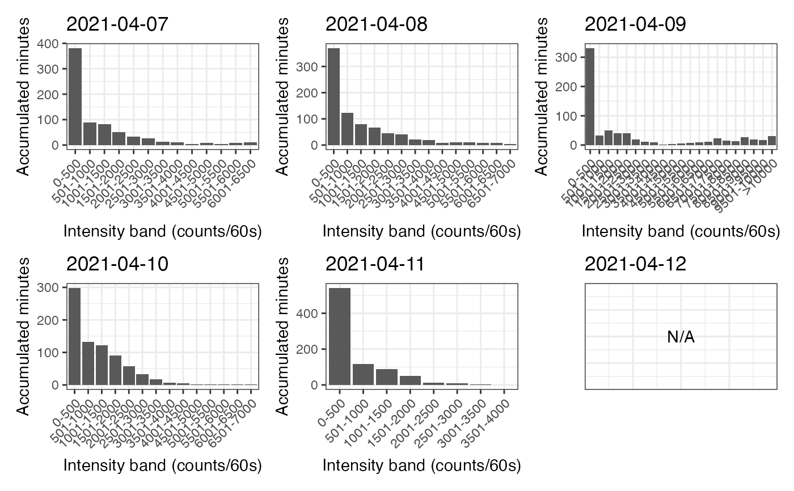

This function summarizes various accelerometer metrics for each day of the measurement period.
Usage
recap_by_day(
data,
col_axis = "vm",
col_time = "time",
col_nonwear = "non_wearing_count",
col_wear = "wearing_count",
valid_wear_time_start = "00:00:00",
valid_wear_time_end = "23:59:59",
age = 40,
weight = 70,
sex = c("male", "female", "intersex", "undefined", "prefer not to say"),
start_first_bin = 0,
start_last_bin = 10000,
bin_width = 500
)Arguments
- data
A dataframe obtained using the
prepare_dataset,mark_wear_time, and then themark_intensityfunctions.- col_axis
A character value to indicate the name of the variable to be used to compute total time per bin of intensity and then intensity gradient.
- col_time
A character value indicating the name of the variable where time information is provided.
- col_nonwear
A character value to indicate the name of the variable used to count nonwear time.
- col_wear
A character value to indicate the name of the variable used to count wear time.
- valid_wear_time_start
A character value with the HH:MM:SS format to set the start of the daily period to consider for computing valid wear time.
- valid_wear_time_end
A character value with the HH:MM:SS format to set the end of the daily period to consider for computing valid wear time.
- age
A numeric value in yr.
- weight
A numeric value in kg.
- sex
A character value.
- start_first_bin
A numeric value to set the lower bound of the first bin of the intensity band (in counts/epoch duration).
- start_last_bin
A numeric value to set the lower bound of the last bin of the intensity band (in counts/epoch duration).
- bin_width
A numeric value to set the width of the bins of the intensity band (in counts/epoch duration).
Value
A list of objects: df_all_metrics, p_band, and p_log.
df_all_metrics is a dataframe containing all the metrics for each day.
p_band is a figure that shows the distribution of time spent in the configured bins of intensity for each day of the dataset.
p_log is a figure that shows, for each day, the relationship between the natural log of time spent in each intensity bin with the natural
log of the middle values of the intensity bins.
Details
The following metrics are computed from epochs corresponding to valid wear time:
wear_time: total wear time computed using the daily period defined in the function
total_counts_axis1: total counts for the vertical axis
total_counts_vm: total counts for the vector magnitude
axis1_per_min: mean of the counts per minute for the vertical axis
vm_per_min: mean of the counts per minute for the vector magnitude
minutes_SED: total minutes spent in SED behavior
minutes_LPA: total minutes spent in LPA behavior
minutes_MPA: total minutes spent in MPA behavior
minutes_VPA: total minutes spent in VPA behavior
minutes_MVPA: total minutes spent in MVPA behavior
percent_SED: proportion of wear time spent in SED behavior
percent_LPA: proportion of wear time spent in LPA behavior
percent_MPA: proportion of wear time spent in MPA behavior
percent_VPA: proportion of wear time spent in VPA behavior
percent_MVPA: proportion of wear time spent in MVPA behavior
ratio_mvpa_sed: ratio between MVPA and SED times (
minutes_MVPA/minutes_SED)mets_hours_mvpa: total MET-hours spent in MVPA behavior
total_kcal: total kilocalories
PAL: physical activity level
total_steps: total step count
max_steps_60min: best step accumulation per minute averaged over a window of 60 continuous minutes
max_steps_30min: best step accumulation per minute averaged over a window of 30 continuous minutes
max_steps_20min: best step accumulation per minute averaged over a window of 20 continuous minutes
max_steps_5min: best step accumulation per minute averaged over a window of 5 continuous minutes
max_steps_1min: best step accumulation per minute over a window of 1 minute
peak_steps_60min: step accumulation per minute averaged over the best 60 continuous or discontinuous minutes
peak_steps_30min: step accumulation per minute averaged over the best 30 continuous or discontinuous minutes
peak_steps_20min: step accumulation per minute averaged over the best 20 continuous or discontinuous minutes
peak_steps_5min: step accumulation per minute averaged over the best 5 continuous or discontinuous minutes
peak_steps_1min: step accumulation per minute over the best minute (same result as for
max_steps_1min)ig: intensity gradient
M1/3: the count value (in counts/epoch duration) at and above which the most active 8h were accumulated over the day
M120: the count value (in counts/epoch duration) at and above which the most active 120 minutes were accumulated over the day
M60: the count value (in counts/epoch duration) at and above which the most active 60 minutes were accumulated over the day
M30: the count value (in counts/epoch duration) at and above which the most active 30 minutes were accumulated over the day
M15: the count value (in counts/epoch duration) at and above which the most active 15 minutes were accumulated over the day
M5: the count value (in counts/epoch duration) at and above which the most active 5 minutes were accumulated over the day
PAL is computed by dividing total energy expenditure (TEE) by BMR. TEE is obtained by summing the kilocalories computed for wear time epochs and the kilocalories related to BMR theoretically expended during nonwear time epochs (it is assumed that the periods where the device was not worn corresponded to sleeping periods, during which energy expenditure is near of BMR), and by multiplying this sum by 10/9 to take into account the thermic effect of food. Of course, such calculations may conduct to underestimate TEE and PAL if the device was removed during prolonged periods of physical activity. Moreover, even if the device was correctly worn, the estimate of PAL is very approximate since both BMR and kilocalories are estimated using methods that may not be accurate at the individual level.
The intensity gradient and the MX metrics are obtained using the compute_intensity_distri_metrics function.
Examples
# \donttest{
file <- system.file("extdata", "acc.agd", package = "activAnalyzer")
mydata <- prepare_dataset(data = file)
mydata_with_wear_marks <- mark_wear_time(
dataset = mydata,
TS = "TimeStamp",
to_epoch = 60,
cts = "vm",
frame = 90,
allowanceFrame = 2,
streamFrame = 30
)
#> frame is 90
#> streamFrame is 30
#> allowanceFrame is 2
mydata_with_intensity_marks <- mark_intensity(
data = mydata_with_wear_marks,
col_axis = "vm",
equation = "Sasaki et al. (2011) [Adults]",
sed_cutpoint = 200,
mpa_cutpoint = 2690,
vpa_cutpoint = 6167,
age = 32,
weight = 67,
sex = "male"
)
#> You have computed intensity metrics with the mark_intensity() function using the following inputs:
#> axis = vm
#> sed_cutpoint = 200 counts/min
#> mpa_cutpoint = 2690 counts/min
#> vpa_cutpoint = 6167 counts/min
#> equation = Sasaki et al. (2011) [Adults]
#> age = 32
#> weight = 67
#> sex = male
recap_by_day(
data = mydata_with_intensity_marks,
col_axis = "vm",
age = 32,
weight = 67,
sex = "male",
valid_wear_time_start = "07:00:00",
valid_wear_time_end = "22:00:00",
start_first_bin = 0,
start_last_bin = 10000,
bin_width = 500
)
#> Joining with `by = join_by(date)`
#> Joining with `by = join_by(date)`
#> Joining with `by = join_by(date)`
#> You have computed results with the recap_by_day() function using the following inputs:
#> age = 32
#> weight = 67
#> sex = male
#> $df_all_metrics
#> # A tibble: 6 × 38
#> date wear_time total_counts_axis1 total_counts_vm axis1_per_min
#> <date> <dbl> <dbl> <dbl> <dbl>
#> 1 2021-04-07 720 359125 721646. 499.
#> 2 2021-04-08 811 495257 946482. 611.
#> 3 2021-04-09 718 1222315 1945734. 1702.
#> 4 2021-04-10 770 320847 806592. 417.
#> 5 2021-04-11 820 167999 431270. 205.
#> 6 2021-04-12 0 0 0 NaN
#> # ℹ 33 more variables: vm_per_min <dbl>, minutes_SED <dbl>, minutes_LPA <dbl>,
#> # minutes_MPA <dbl>, minutes_VPA <dbl>, minutes_MVPA <dbl>,
#> # percent_SED <dbl>, percent_LPA <dbl>, percent_MPA <dbl>, percent_VPA <dbl>,
#> # percent_MVPA <dbl>, ratio_mvpa_sed <dbl>, mets_hours_mvpa <dbl>,
#> # total_kcal <dbl>, pal <dbl>, total_steps <dbl>, max_steps_60min <dbl>,
#> # max_steps_30min <dbl>, max_steps_20min <dbl>, max_steps_5min <dbl>,
#> # max_steps_1min <dbl>, peak_steps_60min <dbl>, peak_steps_30min <dbl>, …
#>
#> $p_band

#>
#> $p_log
#> `geom_smooth()` using formula = 'y ~ x'
#> `geom_smooth()` using formula = 'y ~ x'
#> `geom_smooth()` using formula = 'y ~ x'
#> `geom_smooth()` using formula = 'y ~ x'
#> `geom_smooth()` using formula = 'y ~ x'
 #>
# }
#>
# }